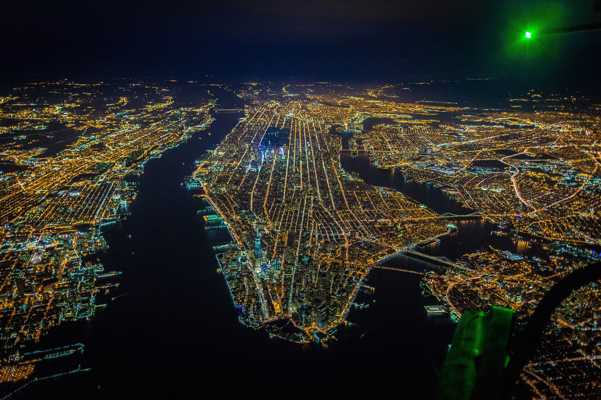

New York City
 뉴욕시는 미국의 북동부, 뉴욕주의 남쪽 끝에 있는 도시이다. 미국에서 가장 인구가 많은 도시로, 세계에서 가장 인구가 많은 도시 중 하나이며 미국의 최대도시 이다. 세계적인 대도시인 뉴욕은 상업, 금융, 미디어, 예술, 패션, 연구, 기술, 교육, 엔터테인먼트 등 많은 분야에 걸쳐 큰 영향을 끼치고 있으며, 도쿄, 런던과 함께 세계 3대 도시이자 세계의 문화 수도로 불리기도 한다. 이 외에도 뉴욕은 국제 외교에서 중요한 도시이며, 유엔 본부가 있다.
뉴욕은 맨해튼, 브루클린, 퀸스, 브롱스, 스태튼아일랜드와 같은 다섯 개의 자치구로 나뉘어 있다. 이 자치구들은 각각 독립되어 있었다가 1898년 뉴욕에 합병되었다.뉴욕의 인구는 2018년을 기준으로 8,398,748명으로, 305 제곱마일에 걸쳐 분산되어 있다. 또한, 뉴욕은 미국에서 인구 밀도가 가장 높은 도시 중 하나이다. 800개가 넘는 언어가 사용되며, 세계에서 가장 다양한 언어가 공존하는 도시이다. 뉴욕 대도시권에는 6,720 제곱마일에 걸쳐 1,890만 명의 인구가 살고 있다.
이 지역은 1624년 네덜란드 공화국의 이주민들이 무역항으로 설립하였고, 1626년 네덜란드인들이 뉴암스테르담이라는 지명을 붙였다. 1664년에는 영국인들이 강제 점령해 도시와 그 주변 지역을 통치했고, 찰스 2세가 동생 요크 공(제임스 2세)에게 땅을 주면서 뉴욕이라고 불리기 시작하였다. 뉴욕은 1785년부터 1790년까지 미국의 공식적인 수도였다. 1790년부터는 미국에서 가장 큰 도시로 성장했다. 이후 19세기 말부터 20세기 초까지 수백만의 이민자들이 배를 타고 뉴욕으로 이주해 왔다.
뉴욕에는 5번가를 포함한 거리, 자유의 여신상을 포함한 랜드마크가 많이 있으며, 연간 5천만 명의 관광객이 방문한다. 타임스 스퀘어는 '세계의 교차로'(The Crossroads of the World)라고 불리고 있다. 타임스 스퀘어 부근에서는 브로드웨이 뮤지컬이 상연되며, 뉴욕은 엔터테인먼트 산업의 중심지로 일컬어진다. 엠파이어 스테이트 빌딩, 록펠러센터, 크라이슬러 빌딩을 포함한 초고층 건물, 센트럴 파크를 포함한 공원, 브루클린 다리 등을 포함한 다리도 많이 있다. 경제 수도로도 불리는 뉴욕에는 월 가가 있으며, 뉴욕 증권거래소(NYSE)와 NASDAQ이 이 거리에 있다. 맨해튼의 부동산 시장은 세계에서 가장 비싸다. 뉴욕 지하철은 세계 최대의 지하철망 중 하나이며, 컬럼비아 대학교, 뉴욕 대학교를 포함한 수많은 대학교도 뉴욕에 있다.